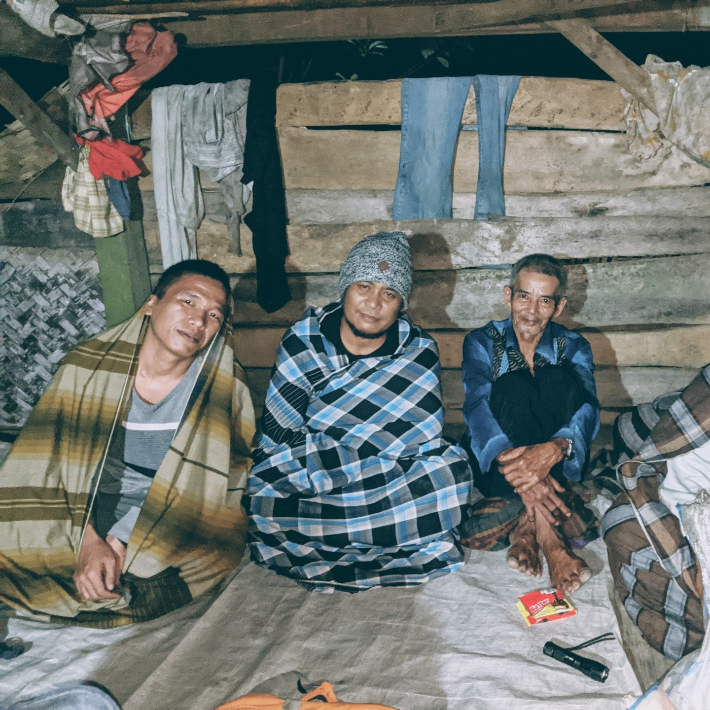
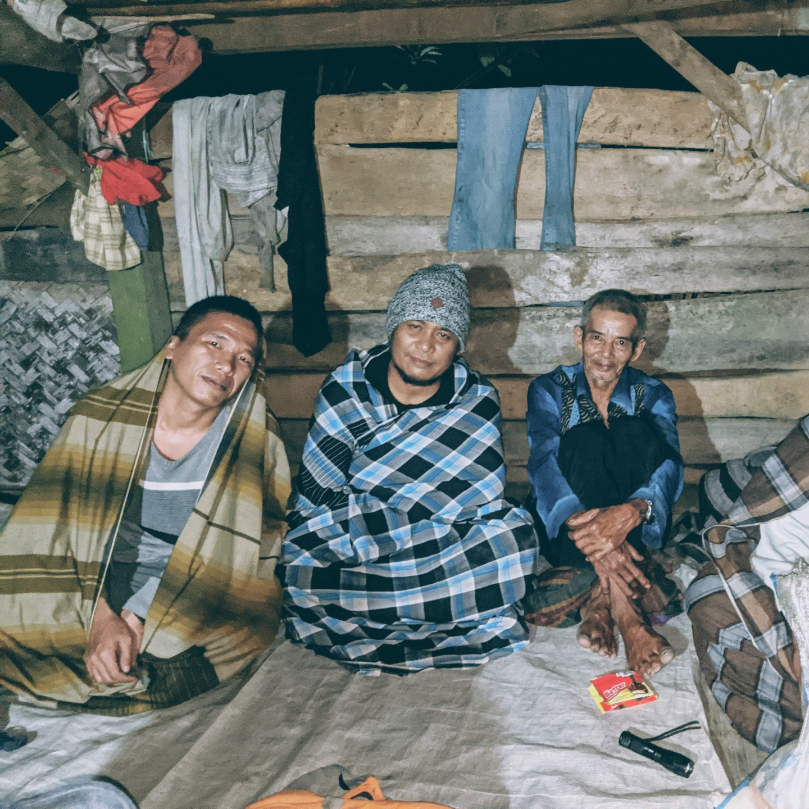

ODANG
Psychology Student
"Saya seorang mahasiswa psikologi yang senang belajar bagaimana teknologi bekerja"
PROFIL
Saya adalah mahasiswa semester 6 jurusan Psikologi di Universitas Buuana Perjuangan Karawang. Saat ini, dia tengah mengikuti program Bangkit Academy di Kampus Merdeka dengan fokus pada studi independen di jalur Cloud Computing.
PENDIDIKAN
2021 - Present | Universitas Buana Perjuangan Karawang
PENGALAMAN
Selama perjalanan saya di perguruan tinggi, saya tidak hanya fokus pada akademis, tetapi juga aktif terlibat dalam berbagai organisasi di kampus. Saya menjadi anggota Rotary International dan Pers Mahasiswa, di mana saya belajar banyak tentang kepemimpinan, kolaborasi tim, dan pemberdayaan komunitas.
GALERI PHOTO

 
